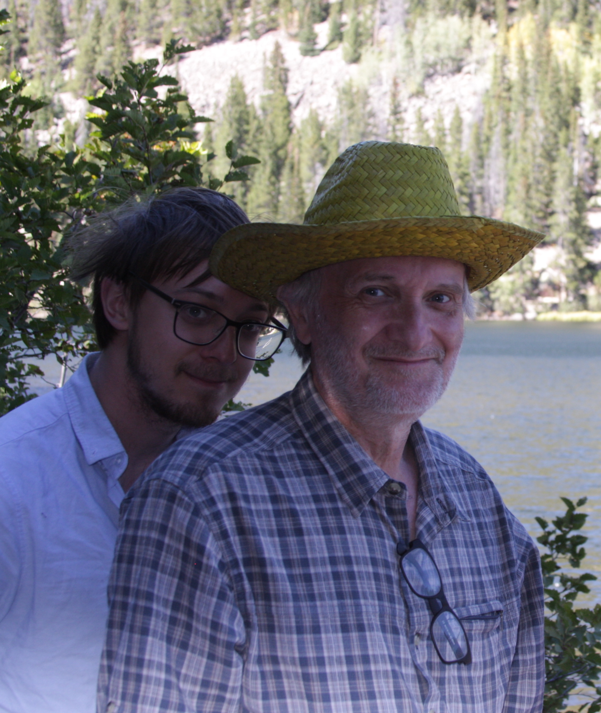

Eulogy
–
To my father (late)
I dream about you all the time. Sometimes we’re in a car, and I try to gently remind you that it is dangerous for people who have suffered a fatal heart attack to drive.
Living in memory doesn’t really suit you, with its proclivity for the grandiose. Epithets like “wise” and “gentle” roll off you slightly awkwardly, though true. They misleadingly suggest an air of purposeful humility. In my mother’s words, you were “the rare case of a man without an ego”.
Some assorted thoughts:
You loved to be early - to airports, especially. This, part of a perennial but mild neuroticism.
You cooked wonderful food every day - your homespun repertoire, now lost for good, was of vaguely hippyish vegetarian rice dishes, which you’d experiment on over time.
You loved to do chores (who loves to do chores?) and were sometimes comically meticulous. When I sent you an email asking if I’d left some item of clothing at home, I’d get 10 photos of potential culprits in return, with an offer to send any of them over immediately.
You didn’t get angry.
You drove us, as children, to playgrounds and amusement parks, and later sports events and parties, unfailingly, at all hours of the day, and without complaint.
When I lost my temper, you knew exactly how to defuse my anger with a joke that indicated you understood my side.
You had a subtle sense of humor - we would often send each other comedy skits - and I keep old emails of yours marked unread in my inbox that still make me laugh, like memories of your jocular expressions, slightly ludicrous but self aware.
On the other hand, you were subdued in the presence of strangers. Even old friends remarked on your quietness.
You’d clean my room against my will every time I left for a term at uni. You claimed, computer scientist that you were, that this process was “structure preserving” - you just mapped the books and clothes strewn over my floor to new, tidier positions. This was not true.
You owned at least 20 pairs of glasses, lost behind every sofa in the house, like some mad academic. In your later years you’d start to prefer ones with perfectly round, small lenses, that made you look like a 19th century German professor. “They’re quite good, aren’t they”, you’d say with a wry grin to my mother’s disparagement, that makes me smile.
You’d pick mushrooms in the fields, and point them out when we went on walks and talked about logic and my half baked thoughts about philosophy.
Your chair is empty at dinner now, like the chair left for Elijah at passover, who is always welcome but never shows up.
More thoughts:
I remember you, in an atemporal sort of way, sitting in your room reading a spy novel in your shirt and boxers, while watching the news. You once picked me up from the station wearing that. You once cut onions wearing a snorkeling mask to protect your eyes. I miss all your small absurdities.
I remember your inflexible hands and carpal-tunnel-ridden handwriting. A characteristically forthright hotel manager in the Midlands had once suggested I do your signature for you. You were also of a departing generation of computer scientists who typed slower than they wrote.
I remember once finding a book in the house and noticing with surprise that you had written it. It had just never occurred to you to mention that. You didn’t have a retirement party, because the whole idea was “embarrassing”. Even in your death. you were unassuming; you just dropped the pan you were holding, fell back, and that was pretty much that.
I remember how you booked me into an arachnophobia course without telling me (you had cured your own arachnophobia by capturing and keeping a spider as a pet, but then, that approach isn’t for everyone).
I remember how I once turned up for an interview, only to find that my interviewer was an old friend of yours. you had deliberately avoided mentioning this, feeling uncomfortable with any possibility of nepotism.
I remember how you would always check the lights were off at night (usually several times), and find me downstairs. There would always be some thought you had to share, or some mild concern. I always teased you about worrying too much. You’d exaggerate it in turn. In the afternoon, you’d drop in to my room to ask what I wanted for dinner. I also remember my excitement in early childhood to hear the sound of your keys in the door, coming home from work.
And also, and also.
You talked about your work so little that my own nascent interests in logic at university seemed like a coincidence when I found out about your limitless knowledge about that topic. Months before your death we’d stood on a beach in California, near where you are now buried, and worked out some logical definition with a stick in the sand.
I inherited your social awkwardness, sense of humour, academic interests and as I’ve been occasionally told, your appearance.
I always hoped, or rather assumed, that you’d be around to help me out my whole life, but as soon as you died, it became suddenly apparent that you inhabited a now distant seeming past, impossibly far away and inaccessible. This was cemented by the influx of consolatory emails, all so kind, from former students, colleagues and friends, which exposed a legacy of mentoring that, unbeknown to me, had characterized your career.
I admired your intellectual patience, identified with your wry humour and I hoped you knew how much I loved you. That’s all my mother and brother and I wanted to say to you in hospital - that we loved you and that you should stay with us. you weren’t the sort of person I felt comfortable expressing that kind of emotion to at any less pressing time. It was just a bit too embarrassing and we were a bit too British.
Your love for us was shown through acts not words - through books you’d recommend, emails with talks or papers you thought I’d enjoy about mathematics or Derrida or puddles in Yorkshire, and the ceaseless performance of a thousand and one small chores - whatever you thought would help us in our life. You were a perfect example of how to be good, and I miss you so so much.
I take comfort that you lived a happy life to the almost very end, a self-made man whose own father had died in your early youth, and who had built your own family life from scratch.
I hope to remember you when I cook meals from your mysterious recipes, and when I laugh uncomfortably during small talk. I’ll also remember you when I raise my eyebrows in that strained expression we both assume when talking to shop assistants and when I paw at my phone over the top of my glasses. And maybe, if I read The Cat in the Hat to children of my own or carry them up the stairs after they fall asleep on the sofa, I’ll remember your unassuming parenting, which was quietly gentle and wise.

(On display: the tendency our hair has to stick up at the back - his hidden by a hat)